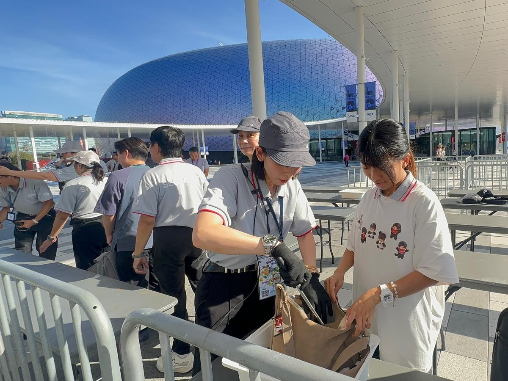

The Weeknd: After Hours Til Dawn Tour 登陸體育園 觀眾入場前必讀：主辦方安檢安排、入場須知及禁攜物品一覽
The Weeknd: After Hours Til Dawn Tour at Kai Tak — Security Checks, Entry Arrangements and Prohibited Items
The Weeknd: After Hours Til Dawn Tour 登陆体育园 观众入场前必读：主办方安检安排、入场须知及禁携物品一览
The Weeknd: After Hours Til Dawn Tour 將於10月24、25、30及31日登陸啟德主場館，四場演唱會當日下午4時開放安檢，晚上8時15分開場。主辦方要求所有觀眾入場時檢查隨身物品及接受金屬探測，體育園提醒觀眾輕裝出行、提前領取實體門票，並預留足夠交通及入場時間。
據主辦方介紹，The Weeknd 是史上巡迴演唱會最暢銷的個人男歌手，今次巡演配合突破性的舞台設計與極具震撼力的歌單編排。體育園預計10月30日（星期五）會有較多觀眾在下班後乘公共交通工具到場，加上當日園區內另有其他公眾活動及球賽舉行，體育園一帶交通及港鐵屯馬綫將較平日繁忙，呼籲觀眾提前規劃行程，預留額外交通及入場時間。
入場安排：演唱會晚上8時15分開始，持票人士可於下午4時起進行安檢。啟德主場館將因應門票類別實施分時段入場，觀眾請查閱門票上的入場閘口，可經西橋（較近港鐵宋皇臺站）或中央廣場（較近港鐵啟德站）前往。持企位門票的觀眾，安檢後可於B及Y閘的指定等候區排隊，再按現場工作人員指示分批入場；要留意Y閘設於地面，乘港鐵的觀眾可於啟德站D出口出站後，沿啟德車站廣場及沐泰街迴旋處步行，經承啟道行人過路設施前往。
安檢與禁攜物品：因應主辦方要求，所有入場觀眾於安檢時須檢查隨身物品，並接受金屬探測器探測，請預留充裕時間驗票及安檢。不可攜帶入場的物品包括所有專業相機、攝錄機、運動相機、360度相機、可拆卸鏡頭相機、長焦鏡頭、手機外接鏡頭、自拍棒、錄音設備、望遠鏡、三腳架、無人機及遙控飛行裝置、激光筆、螢光棒及會閃光的發光裝置（官方手環Pixmob除外）、平板電腦及手提電腦、長傘，以及任何尺寸超過38 x 30 x 20厘米的物品。容量600毫升以下的塑膠或硅膠空容器（不連瓶蓋／樽蓋）則可攜帶入場，嬰兒食品或藥物容器亦獲准。
交通安排：體育園建議使用公共交通工具往返，由港鐵宋皇臺站D出口或啟德站D出口步行約10分鐘可達。過境旅客請留意屯馬綫尾班車：由宋皇臺站及啟德站前往東鐵綫羅湖站（經大圍站轉車）的最後一班列車，分別於晚上10時59分及11時01分開出。散場時段將有11條特別巴士路線於宋皇臺道上落客區提供服務；跨境旅客可乘SP12號線往皇崗口岸，或乘A25S號線到港珠澳大橋香港口岸轉乘穿梭巴士。跨境巴士上落客區設於主場館地面G層，離場時可由2樓H閘外經扶手電梯前往。的士方面，觀眾可使用啟德主場館的士站；啟德體藝館的士站當日下午4時後僅供落客。主場館不設非預約公眾泊車位，請避免駕車前往。
行李寄存及其他須知：現場付費行李寄存處於活動日下午3時30分至晚上11時15分開放，寄存處分別位於啟德體藝館1M層（近中央廣場）、啟德青年運動場外及啟德主場館跨境巴士上落客區；收費按物品種類及尺寸而定，長傘、水樽寄存費為每件港幣10元，使用付費行李寄存服務每件每次同為10元。寄存及取回物品或需排隊，請預留足夠時間。體育園範圍內全面禁止吸煙（指定吸煙區除外），活動期間主場館外露天位置設有臨時指定吸煙區；進場後離場者，門票不能再次使用入場。另外，根據香港法例，未滿18歲人士不得購買或飲用酒精飲品。演出前後，樂迷亦可憑活動門票於啟德零售館指定商戶享用票尾餐飲及購物優惠。有關安排或因應實際情況調整，詳情以啟德體育園官網及主辦單位最新公布為準。